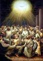

Seguidores de Jesucristo los Separaron las Buenas Noticias
El Don del Espíritu Santo
Durante los cuarenta días que Jesucristo se apareció a Sus discípulos después de Su resurrección, Él les dijo que no salieran de Jerusalén hasta haber recibido el don del Espíritu Santo que les había prometido a ellos. (Juan 14:16) En el segundo capítulo del libro de los Hechos, leemos la historia de los seguidores de Jesucristo, que estaban haciendo exactamente eso: Todos se habían reunido cuando de repente se escuchó un fuerte estruendo, como un viento violento que soplando en toda la casa donde se hospedaban. ¡Ellos vieron lo que parecían ser lenguas de fuego en cada persona! En ese momento, fueron todos llenos del Espíritu Santo. Este relleno del Espíritu Santo causado a todos a empezar a hablar en otras idiomas. (Hechos 2:4)
Es la casualidad de que cuando los seguidores de Jesucristo fueron llenos del Espíritu Santo de esta manera, hubo miles de personas de países de todo Israel, que había venido a Jerusalén para celebrar una de las fiestas Judías. (Usted puede leer una lista de estos países en Hechos 2:8-11.) Milagrosamente, cada uno de estos visitantes podían oír los seguidores de Jesucristo diciendo la buena noticia de salvación en Cristo Jesús, ¡hablando en su propia idioma!
El discípulo, Pedro, pronunció un discurso sobre todo en movimiento acerca de cómo Jesucristo, Él que había sido crucificado por ningún delito, es el Hijo de Dios. Le dijo a la multitud que la salvación llega a través de Jesucristo. ¡Así que muchos en la multitud se trasladaron por lo que Pedro dijo que más de 3.000 personas aceptaron a Jesucristo como el Mesías y como su salvador ese día!

Este día marca realmente el comienzo de la iglesia Cristiana; ¡piensa en todos los nuevos creyentes que regresaron a sus países de origen y que les platicaron a sus amigos y familias acerca de la salvación a través de Jesucristo! El número de personas que seguían "El Camino," como la iglesia fue la primera llamada, comenzó a crecer rápidamente en todo lo que se conoce ahora como el Oriente Medio y la Europa mediterránea. El libro de los Hechos es la historia de cómo los seguidores de Jesucristo difundir la buena noticias de la salvación.

Conversión y Persecución
Recordemos que fue en Jerusalén, que los discípulos estaban llenos del Espíritu Santo, y Jerusalén era el lugar donde la gente hablando acerca de Jesús era más rechazados−−después de todo, aquí es donde Jesús había sido crucificado. La persecución de los líderes Judíos que habían asesinado a Jesucristo se centra ahora en el nuevo grupo y cada vez mayor de los seguidores de Jesucristo.
Stephen, un predicador más atrevido, fue el primero dicipulo que el Camino de ser asesinado por predicar el evangelio. (Hechos 6:8-7:60)
Una Conversión Más Dramático
Además de Caifás y los demás sacerdotes que presidió el simulacro de juicio de Jesucristo, hubo otro Judio celosos que parecía haberse convertido en la obra de su vida para acabar con todos los seguidores de Jesucristo. El nombre de ese hombre era Saúlo de Tarso.

Saúlo pidió y recibió permiso de los sacerdotes del templo en Jerusalén para reunir y encarcelar a todos los Judios que pudo encontrar que eran creyentes en El Camino.
Saúl fue en realidad de viajar a la ciudad de Damasco para buscar en la sinagoga para los creyentes en Jesucristo, cuando una brillante luz del cielo brilló en torno a él. Cayó al suelo y oyó una voz le pregunto, "¿Saúlo, por qué me persigues?" (Hechos 9:1-19)
"¿Quién eres?" Saúlo dijo.
Fue Jesucristo mismo quien estaba hablando a Saúlo. Dios lo había escogido Saúlo para llevar la Buena Noticia de Jesucristo a los gentiles (cualquier persona que no es un Judio) en todas partes. (Los Hechos 9)
Cuando los Cristianos Judíos se enteraron de que Saúlo se había convertido en un creyente en El Camino, ¡no lo podían creer! Para él, a cambio de un de sus peores perseguidores a uno de sus predicadores más elocuente era demasiado increíble. Fue un largo tiempo antes de que muchos de los creyentes Judíos que podía confiar que Saúlo se había convertido en realidad. Todavía les temían por todo lo que había hecho en el pasado.
Cuando Saúlo comenzó su ministerio de predicación entre los gentiles, comenzó a utilizar la forma romana de su nombre: Pablo. (Saúlo era la forma Judía de su nombre.)
Pablo viajó miles de kilómetros de la difusión del evangelio de Jesucristo. Usted puede leer sobre sus viajes en el libro de los Hechos (Hechos 11:25-Hechos 28). Sufrió una gran cantidad de la persecución a sí mismo por su predicación y enseñanza de Jesús. Fue detenido y encarcelado en Roma. Fue a partir de su encarcelamiento hay que Pablo escribió muchas de las cartas a las iglesias diseminadas por toda Europa que se recogen en el Nuevo Testamento. Gracias a la conversión de Pablo, tenemos la Escritura que da la instrucción Cristiana y de aliento, esperanza y seguridad. Para leer las cartas de Pablo es aprender a vivir como Cristiano.